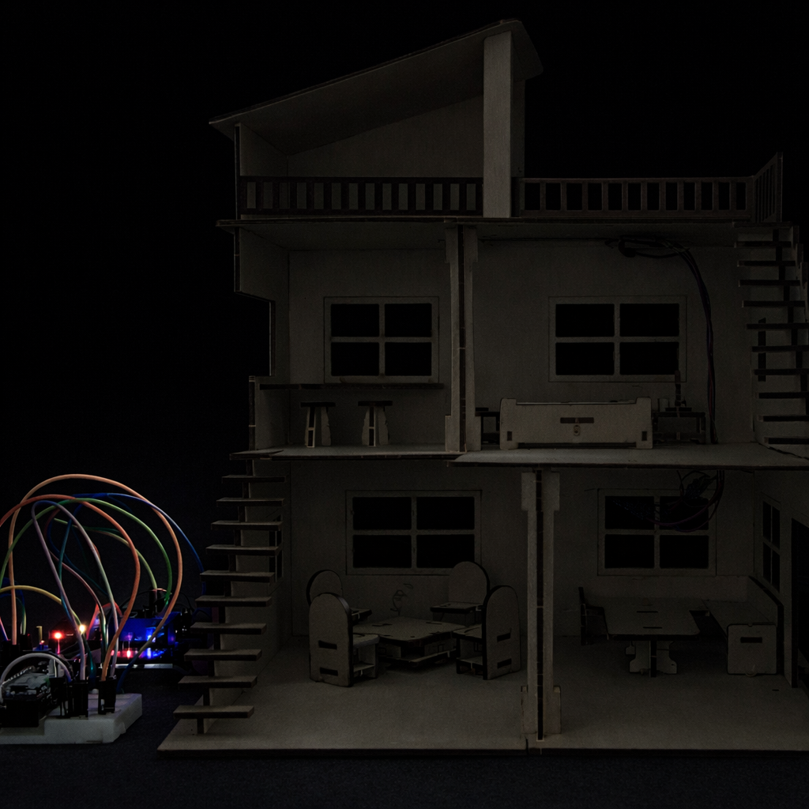

Voice Controlled Smart Home using ESP8266

This project demonstrates a low-cost IoT-based home automation system designed to control household electrical appliances such as lights and fans using voice commands. The system works seamlessly with popular voice assistants like Google Assistant and Amazon Alexa, making it user-friendly and modern. At the core of the system is the ESP8266-based NodeMCU microcontroller, which connects to the internet and communicates with cloud services. A 4-channel relay module is integrated with the NodeMCU to safely switch multiple high-voltage appliances ON or OFF. The project focuses on affordability, compact design, ease of installation, and real-time responsiveness, making it suitable for smart homes, academic demonstrations, and practical everyday use.
#include#include #include #include /* ========= USER CONFIG ========= */ #define WIFI_SSID "TEST_ESP" #define WIFI_PASS "12345678" #define APP_KEY "47c4524f-eeb0-4d86-947e-66d05b8bf5f8" #define APP_SECRET "6c09be76-fde1-4e66-a15f-ea0c410fbf8b-18bb5a2c-2d21-4a36-a099-771b5cfaac2b" #define DEVICE1_ID "6973652040cb098d90c4da57" #define DEVICE2_ID "697363d57e0883bc2690cd78" #define DEVICE3_ID "6973628740cb098d90c4d850" #define DEVICE4_ID "xxxxxxxxxxxxxxxxxxxxxxxx" /* ========= PIN CONFIG ========= */ #define RELAY1 5 // D1 #define RELAY2 4 // D2 #define RELAY3 14 // D5 #define RELAY4 12 // D6 #define SW1 13 // D7 #define SW2 16 // D0 #define SW3 2 // D4 #define SW4 15 // D8 #define WIFI_LED 16 #define DEBOUNCE_MS 250 /* ========= STRUCT ========= */ struct Device { const char* id; uint8_t relay; uint8_t sw; bool lastState; unsigned long lastChange; }; /* ========= DEVICES ========= */ Device devices[] = { { DEVICE1_ID, RELAY1, SW1, HIGH, 0 }, { DEVICE2_ID, RELAY2, SW2, HIGH, 0 }, { DEVICE3_ID, RELAY3, SW3, HIGH, 0 }, { DEVICE4_ID, RELAY4, SW4, HIGH, 0 } }; const uint8_t DEVICE_COUNT = sizeof(devices) / sizeof(devices[0]); /* ========= SINRIC CALLBACK ========= */ bool onPowerState(const String &deviceId, bool &state) { for (uint8_t i = 0; i < DEVICE_COUNT; i++) { if (deviceId == devices[i].id) { digitalWrite(devices[i].relay, state ? LOW : HIGH); return true; } } return false; } /* ========= SETUP ========= */ void setupRelays() { for (uint8_t i = 0; i < DEVICE_COUNT; i++) { pinMode(devices[i].relay, OUTPUT); digitalWrite(devices[i].relay, HIGH); // OFF } } void setupSwitches() { for (uint8_t i = 0; i < DEVICE_COUNT; i++) { pinMode(devices[i].sw, INPUT_PULLUP); } } void setupWiFi() { WiFi.begin(WIFI_SSID, WIFI_PASS); while (WiFi.status() != WL_CONNECTED) { delay(300); } digitalWrite(WIFI_LED, LOW); } void setupSinric() { for (uint8_t i = 0; i < DEVICE_COUNT; i++) { SinricProSwitch &sw = SinricPro[devices[i].id]; sw.onPowerState(onPowerState); } SinricPro.begin(APP_KEY, APP_SECRET); SinricPro.restoreDeviceStates(true); } /* ========= LOOP ========= */ void handleSwitches() { unsigned long now = millis(); for (uint8_t i = 0; i < DEVICE_COUNT; i++) { bool current = digitalRead(devices[i].sw); if (current != devices[i].lastState && (now - devices[i].lastChange) > DEBOUNCE_MS) { devices[i].lastChange = now; devices[i].lastState = current; if (current == LOW) { bool relayState = !digitalRead(devices[i].relay); digitalWrite(devices[i].relay, relayState); SinricProSwitch &sw = SinricPro[devices[i].id]; sw.sendPowerStateEvent(!relayState); } } } } void setup() { Serial.begin(9600); pinMode(WIFI_LED, OUTPUT); digitalWrite(WIFI_LED, HIGH); setupRelays(); setupSwitches(); setupWiFi(); setupSinric(); } void loop() { SinricPro.handle(); handleSwitches(); }
This IoT Based Home Automation project successfully demonstrates how modern smart home technology can be implemented using low-cost and easily available components. By integrating the ESP8266 NodeMCU with cloud platforms and voice assistants, the system provides a reliable, user-friendly, and efficient solution for controlling household appliances.
The project highlights the practical application of IoT concepts such as cloud communication, wireless control, and real-time automation, making it highly suitable for academic demonstrations and future enhancements.
Key Benefits:
We would like to sincerely thank our faculty and institution for their guidance and support throughout the development of this project. Their valuable feedback and encouragement played a crucial role in the successful completion of this work.
Thank you for reviewing our project.